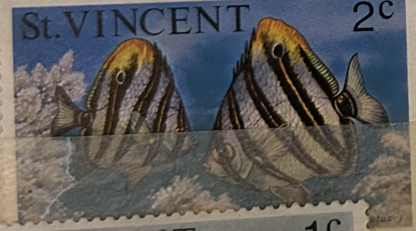
| SOURCE | TITLE| IMAGE MATCH | click to source page |
| eBay | ST. VINCENT 408 - Spotfin Butterflyfish "Chaetodon ocellatus" (pa28151) | eBay | 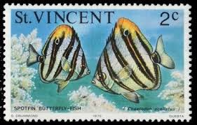 |
| BidCurios | USA - Used Stamp - Special Delivery - (B-002/K6)g - BidCurios | 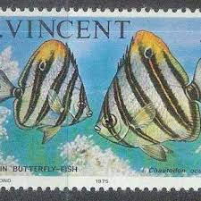 |
| eBay UK | ST VINCENT 1975 SG423 2c. SPOT-FINNED BUTTERFLY FISH - MNH | eBay UK | 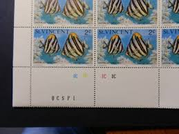 |
| C1 cancellation date on 3 June 2024.Mint stamp Discus fish 2nd local printed 2004.Postage 55c local mail. | 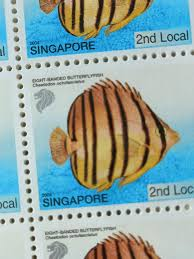 | |
| HipStamp | Bermuda Scott 375 | Caribbean - Bermuda, Stamp / HipStamp | 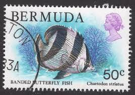 |
| eBay | ST VINCENT FISH 1975- SCOTT# 407-416,421,425 - MNH - Excellent Condition | eBay | 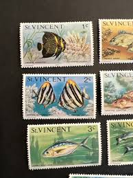 |
| barbadosstamps.co.uk | Rare on cover usage of 1987 definitives | Barbados Stamps | 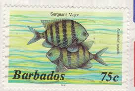 |
| HipStamp | Browse Listings in Caribbean > St. Thomas and Prince Islands / HipStamp | 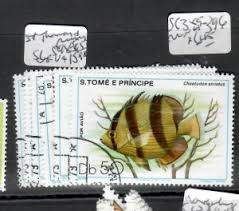 |
| Carousell | 2004 Singapore Tropical Marine Fishes Definitives Butterflyfish mint unused single Stamp set, Hobbies & Toys, Memorabilia & Collectibles, Stamps & Prints on Carousell | 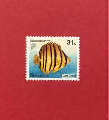 |
| eBay | Singapore Miniature Sheet Stamps 1963-Now for sale | eBay | 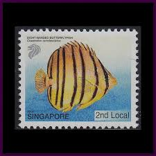 |
| Shutterstock | Belize Circa 1982 Stamp Printed Belize库存照片47386969 | Shutterstock | 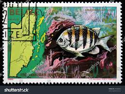 |
| HipStamp | Browse Listings in British Commonwealth > British Caribbean / HipStamp | 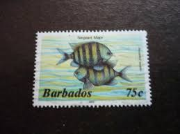 |
| World Register of Marine Species (WoRMS) | WoRMS - World Register of Marine Species - Chaetodon striatus Linnaeus, 1758 | 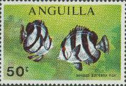 |
| HipStamp | Sharjah Stamps # VF OG NH SCARCE FISH SET BLOCK 4 | Middle East - United Arab Emirates, Stamp / HipStamp | 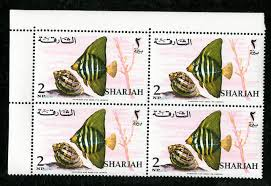 |
| thetuxtailor.com | Stamp Collection Spain 1988 King Karl III Stamp Block - Complete Issue Unmounted Mint Never Hinged 1988 Complete Block MNH | 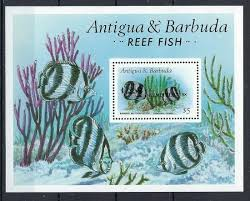 |
| Avion Thematics | Avion Thematics Stamps | Search for stamps on plastic+8 | 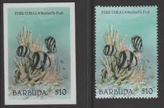 |
| Alamy | Tropical fish on postage stamp of Dominica Stock Photo - Alamy | 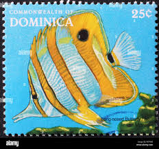 |
| eBay | Barbados stamp 654 used | eBay | 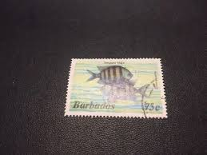 |
| Delcampe | W.W.F. - ANTIGUA & BARBUDA 1987 WWF . 8 V + 2 S/S ( Ovpt ~ BURBUDA MAIL ) ~ * Rare * | 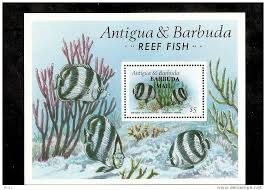 |
| FishBase | Fish stamps and coins | 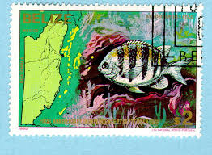 |
| Freestampcatalogue.com | Stamps with the theme Nature - Freestampcatalogue.com - The free online stampcatalogue with over 500.000 stamps listed. | 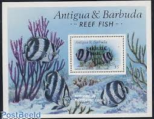 |
| Free stamp catalogue | Stamps with the theme Fish - Freestampcatalogue.com - The free online stampcatalogue with over 500.000 stamps listed. | 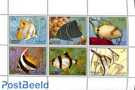 |
| HipStamp | Bermuda 375 -Used - 50c Banded Butterflyfish (1979) (cv $1.25) | Caribbean - Bermuda, General Issue Stamp / HipStamp | 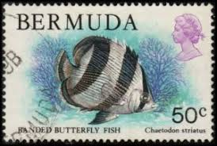 |
| Dreamstime.com | Edition Marine Fauna Stock Photos - Free & Royalty-Free Stock Photos from Dreamstime | 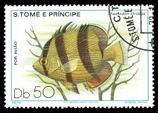 |
| Filatelia Kevorkian | ANTIGUA/STAMPS, 1987 - W.W.F. - FISHIES - CORALS - YV 963/66 + BF 123 - 4 VALUES + SOUV SHEET - MNH - Filatelia Kevorkian | 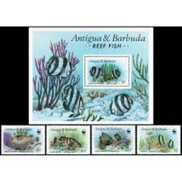 |
| HipStamp | Browse Listings in Australia & Oceania > Norfolk Island / HipStamp | 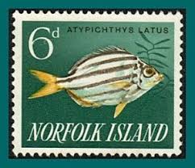 |
| Alamy | Sergeant major fish abudefduf saxatilis hi-res stock photography and images - Alamy | 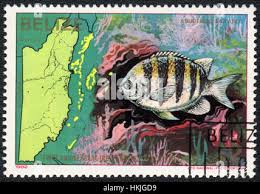 |
| iStock | Yellow And Black Tropical Fish On A Polish Postage Stamp Stock Photo - Download Image Now - iStock | 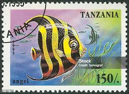 |
| WoRMS - World Register of Marine Species | World Register of Introduced Marine Species (WRiMS) |  |
| WoRMS - World Register of Marine Species | Canadian Register of Marine Species - Abudefduf saxatilis (Linnaeus, 1758) | 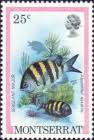 |
| zayixstamps.com | Barbuda 865 MNH Banded Butterfly Fish WWF from SS ZAYIX 072622X034 – Zayix Stamps & Collectibles | 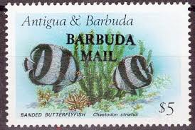 |
| Alamy | Map belize hi-res stock photography and images - Alamy | 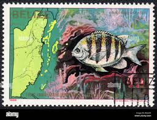 |
| African Animals and Babies Postage Stamp Set // Ajman 1972 | Etsy | 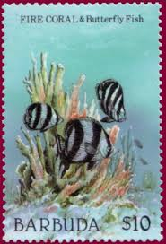 | |
| eBay | 109108] Grenada 1990 Marine life fish Sergeant Major Souvenir Sheet MNH | eBay | 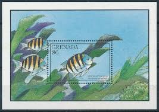 |
| eBay | W SAINT-THOMAS 0553 MC FISH MAXI CARD | eBay | 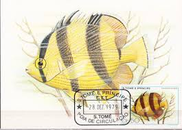 |
| Shutterstock | Sharjah Circa 1966 Stamp Printed Sharjah Stock Photo 95024338 | Shutterstock | 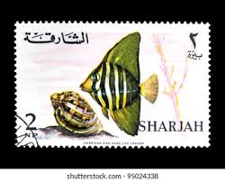 |
| Shutterstock | Stamp Sea: Over 22,250 Royalty-Free Licensable Stock Photos | Shutterstock | 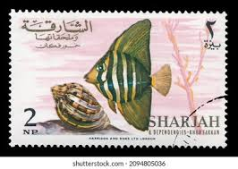 |
| Philatelic Collector Inc. | Samoa - Scott #1047 - Philatelic Collector Inc. | 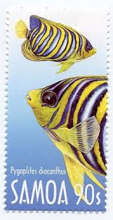 |
| Dreamstime.com | 1st Sea Map Stock Photos - Free & Royalty-Free Stock Photos from Dreamstime | 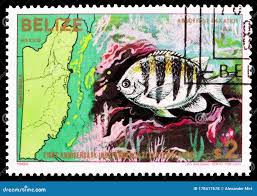 |
| Shutterstock | 92 Chaetodon Striatus Royalty-Free Images, Stock Photos & Pictures | Shutterstock | 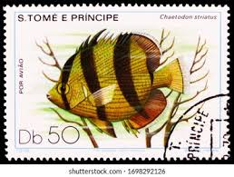 |
| eBay | Barbados SC 654a Fish VFU (2gtx) | eBay | 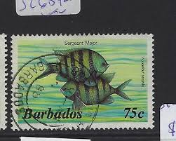 |
| marthamunoz.com | Spotlight Functional Trade-Offs Asymmetrically Promote Phenotypic Evolution | 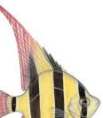 |
| WordPress.com | 1962 | Singapore Variety Stamp | 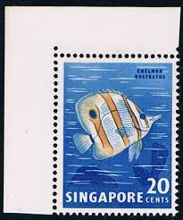 |
| eBay | Grenada 1867-1876, MNH. Michel 2151-2160. Fish 1990.Sergeant Major,Smooth trunk. | eBay | 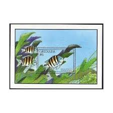 |
| eBay | Barbados SC 654 Fish VFU (2gtx) | eBay | 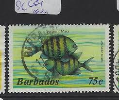 |
| eBay | COCOS ISLANDS 37 (SG37) - Meyer's Butterflyfish "Chaetodon meyeri" (pa53267) | eBay | 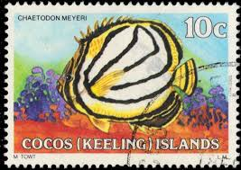 |
| Atlas Aquarium | Limited Edition Dylan Andreas Fish Print | 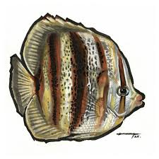 |
| livestockusa | Marine Fish - Freshwater Fish - Stamp Collecting - Topicals | 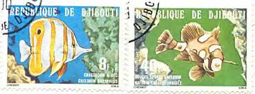 |
| WoRMS - World Register of Marine Species | WoRMS - World Register of Marine Species - Photogallery | 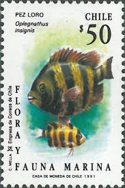 |
| eBay | Stamps Barbados Scott #654a never hinged | eBay | 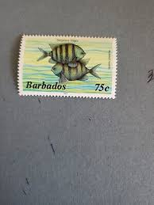 |
| eBay | ASCENSION 517 (SG555) - Five Finger Fish "Abudefduf saxatilis" (pb73626) | eBay | |
| WoRMS - World Register of Marine Species | WoRMS - World Register of Marine Species - Chaetodon meyeri Bloch & Schneider, 1801 | |
| eBay | Cancelled to Order/CTO Fish Middle Eastern Stamps for sale | eBay | |
| dylan andreas | fish — dylan andreas | |
| Mudah.my | 1985 Guernsey Stamp Fish - Hobby & Collectibles for sale in Petaling Jaya, Selangor | |
| AbeBooks | Annual Reports of the Forest, Fish and Game Commissioner of the State of New York for 1904 - 1905 - 1906. by Various / Unstated: Good Hardcover (1907) First Edition. | Dennis Holzman Antiques | |
| eBay | Fishes Stamp Antigonia Capros Marine Fauna S/S MNH #1511 | eBay | |
| eBay | Benin 1996 Fish Set of 5 MNH Stamps | eBay | |
| Wayfair | Beachcrest Home™ Pen Fish MCG-B843b | Wayfair |